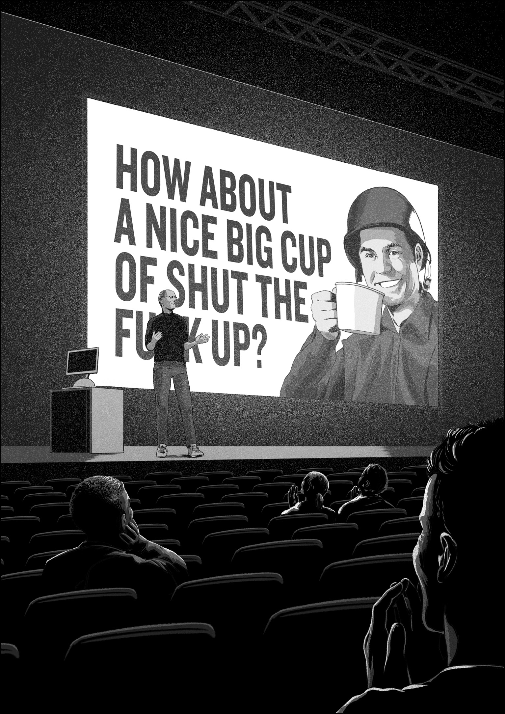
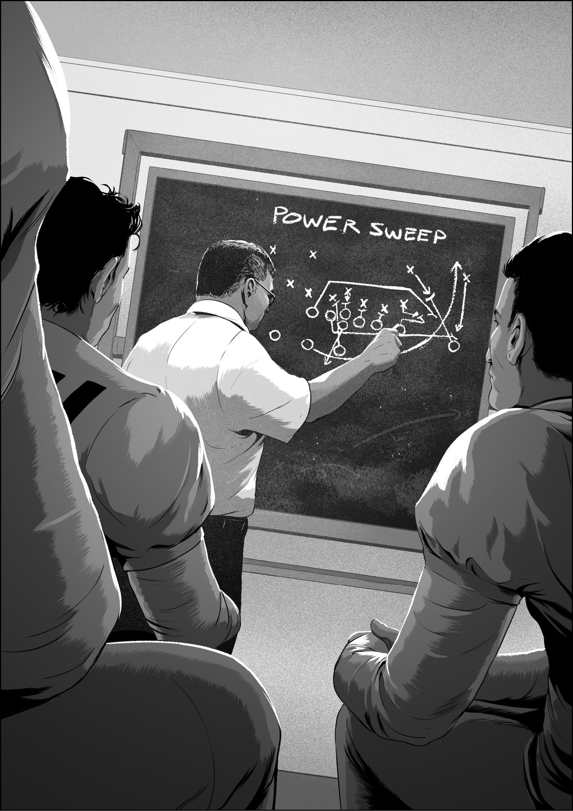

We’d begun as three programmers trying to kick-start a project. Within a few months, we’d hired a few more people, and we were nine, a small web browser software team starting to hit its stride.
By that time, word had come down the management chain. Steve Jobs himself had decided how he would judge our browser as a product. The focus would be on one thing: speed. Steve wanted our browser to be fast, really fast at loading web pages from the internet, much faster than Microsoft Internet Explorer, the default browser on the Mac, the product we aimed to replace.
At Apple, we always tried to deliver the best product out of the box, and in addition to this speed directive, we needed to deliver a browser with a well-rounded set of features—excellent bookmark management and a streamlined user interface were high on the list. Yet the team jelled around our speed goal. The challenge gave us a purpose. Our chat channel, which ran on an Internet Relay Chat (IRC) server, buzzed with technical questions, comments on the latest problem, ideas for solving them, proposals for code changes. At least four or five of us ate lunch together every day, and we would walk down to Caffè Macs in a little posse, crossing the Cupertino campus green space from Infinite Loop 2 to Infinite Loop 4 in a tight group so we could all share in whatever geeky conversation we were having. I started a tradition of waiting at the lunch table for everyone to arrive with their cafeteria selection before I started eating, and I good-naturedly shamed everyone into doing the same—wordlessly, with a sideways stare, a lowered chin, and a raised brow. We took our first bites together. We weren’t a family, but we were a close-knit team. We were a model of Apple-style collaboration, a small group focused on a shared objective, and ours was developing a fast web browser.
In addition, we were keenly aware that product replacements like the one we were attempting could be a delicate business. Once Apple made our new browser the default on the Mac, none of us wanted our users to question whether we had given them an improved web surfing experience. Steve reasoned that a speedy new Apple browser would be the best way to make people forget about Internet Explorer and to feel good about our replacement right away.
Speed was also part of Steve’s vision for the future of internet connectivity. It can be painful to recall the glacial pace of surfing the web in the early 2000s if you lived through it, when hardly anyone had what we would now consider “broadband.” Web pages often jumped around as they loaded; many images came through in a few blurry stages before sharpening up. Everyone knew faster days were coming, and Steve wanted our browser to be ready right away for the increased data that would be flowing through internet connections as they got quicker. Our code had to keep up. Steve thought speed was the long-term key to better browsing, so making a high-performance browser became our top priority, our definition for greatness.
We still had a long way to go. By the late spring of 2002, our web browser was still only capable of crawling. We couldn’t use it for our daily browsing—or anything close. Sometimes the text of articles on news sites would be an illegible jumble; shopping carts on commerce sites would lose track of items; login forms for banking sites would fail, preventing us from checking our account balances. Not to mention that our browser was slow: slow to load data from the internet, slow to draw images, slow to go back to the previous page.
Fixing the bugs that prevented websites from looking and working correctly took up much of our time, but given our Steve-mandated speed directive, we also had to figure how to make the browser run faster.
Don was the one who figured out how we would make our code quick. One day, a month or two after the Black Slab Encounter, he called me into his office and asked me to create a test program to measure browser speed. He envisioned an automated tool that would launch our browser app and command it to load a suite of web pages, one after the other, in rapid succession. Over the next couple days, I wrote the code to do just that. I named it the Page Load Test, but we soon took to calling the PLT.
The PLT became our software conditioning coach, one with the demeanor of a drill sergeant holding a virtual stopwatch. When we clicked the Start button in the PLT window, the test program looked at the first URL on its list, metaphorically hollered this web address at the browser, clicked its stopwatch, and waited, tapping its toe, as the browser loaded the page. Once the page was completely loaded and rendered, the PLT clicked its stopwatch again, noted the time on its clipboard, and then shouted the next address on the list.
Don chose each of the forty web pages in the PLT suite to make the trial for our code as punishing as possible. He selected pages heavy on text, like Yahoo!, and others packed with graphics, like Disney. His list pointed to some of the most visited destinations on the web. Some, like Amazon, Google, and eBay, you’ll recognize. Others are nearly forgotten, like Real Networks, Webcrawler, and iVillage. Together, they covered every important attribute of web page loading and rendering, to expose any weakness in our browser.
After the PLT got to the end of its URL list, it would calculate the average time to load a web page. This was a distilled-down measure for how fast our browser was at that moment, and this single number became the key element to Don’s plan. He issued a managerial edict: No more code changes without running the PLT.
What does this PLT pronouncement mean, and why was it important? On our browser team, as in most serious software development efforts, we followed an editorial process to make changes to our source code. Whenever I finished editing some code, I would write a detailed summary of what my edits did, what feature it implemented or what bug it fixed, and how well I thought my code change accomplished these goals. Then I would find a teammate to review the work with me. The code review process often led to round after round of reviewer feedback, improvements, and requests for re-review. Once everything passed muster in the peer review, and only then, was I allowed to commit my change to our repository, the central server that stored all the revisions to all our source code.
Before the PLT, our editorial process was primarily concerned with feature implementation, bug fixes, and web standards compliance—how well the browser did what it was supposed to do. These were all qualitative measures. The PLT checked for speed, a quantitative test, and it introduced an independent evaluation to every code change we made. Correctness and speed now went hand in hand. Don held that if we heeded the PLT without fail and rejected any code changes that made our code slower, only two things could happen. Either the browser would stay the same speed . . . or it would get faster. He would tap his index finger to his temple to punctuate his explanation of this sneaky logic. From the day the PLT was finished, Don declared, our browser would become faster by never getting slower. It was his Zen koan.
Running the PLT against new code became a daily ritual, sometimes an hourly one. I often used it to test which of two equivalent but subtly different pieces of code was faster. When it came time to make a code change, everything was fine if the browser ran as fast with the new code in place as it did without it. Most code edits had no effect on performance, but some inevitably did, and as long as the change was in the faster direction, then all was well. We sometimes had happy accidents too—unforeseen speedups stemming from changes to remove lingering FIXMEs. Higher-quality code often performs faster.
As we untangled those columns of text from news sites, and fixed e-commerce shopping carts so they always remembered your items, and improved compatibility with banking sites so you could manage your money online, we had to change the code to make these features and functions perform correctly while avoiding making the browser any slower.
There could be no exceptions to the PLT speed rule—Don wouldn’t allow it. When an essential bit of new code caused a slowdown, things could get tricky. Finding remedies for speed setbacks typically involved the prickly issue of software optimization, and that term warrants some explanation.
* * *
There aren’t many famous computer scientists, even among programmers, but Donald Knuth is rightly revered. He is the author of The Art of Computer Programming, one of the foundational texts of computer science, a multivolume treatise that he’s been writing, with something approximating monklike asceticism and devotion, since 1962.1 Knuth undertakes meticulous research, writes with extreme care, and issues publications with titles like Introduction to Combinatorial Algorithms and Boolean Functions, Bitwise Tricks & Techniques; Binary Decision Diagrams, and Generating All Trees—History of Combinatorial Generation. For software developers who take their work seriously, Knuth is the consummate craftsman. Here’s what he has to say about optimization:
Programmers waste enormous amounts of time thinking about, or worrying about, the speed of noncritical parts of their programs, and these attempts at efficiency actually have a strong negative impact when debugging and maintenance are considered. We should forget about small efficiencies, say about 97% of the time: premature optimization is the root of all evil.2 (Emphasis added.)
Optimization is the process where programmers try to make code execute faster. Isn’t that what the PLT was all about? So, isn’t optimization a good thing? Not always, and if the Knuthian numerical estimate is to be given the credence it deserves, and he is an extraordinarily deliberative man, then optimization is bad about 97 percent of the time. Why?
Programs are, after all, just long lists of instructions for computers, and although computers are very fast, they are not infinitely so. To make speedy software, program instructions must be as efficient as possible, but it’s not always straightforward to know which instructions will be fast to execute.
Here’s an example. If I invited you over to the kitchen in my home for the purpose of a demonstration, and I asked you to:
you would accomplish this task easily, since my kitchen is well stocked with condiments. It’s also clear this instruction would take less time to perform than this instruction of similar length:
Since some instructions encapsulate a higher order of conceptual complexity than others, some instructions take longer, perhaps much longer, to execute than others. If I remained in my kitchen while we conducted this mustard jar performance test, I could probably take out and return the jar from my refrigerator many dozens of times before you could bring one back from the store. But then again, that would depend on how close we were to the supermarket. For the purpose of understanding optimization better, the key word in the previous sentence is depend. Sophisticated software is built on an elaborate and interlocking web of dependencies between separate components, and dealing with these relationships is an inescapable part of writing complicated software like a web browser. The mustard jar example begins to illustrate how basic this problem is, hints at how deep it goes, and shows how difficult it can be for a programmer to know how fast a specific piece of code might execute just by looking at it, even if the content of the instruction is perfectly easy to understand.
How does this relate to optimization? Here’s a set of instructions to accomplish another kitchen task:
And an attempt to optimize it:
This third instruction makes a suggestion about the speed of executing this task. The number of trips between refrigerator and counter is posited as the logjam, and the implication is that if the number of go-rounds could be reduced, then the overall operation could be accomplished faster.
Is that right? This optimization attempt raises several questions. Loading and unloading a few big armloads of stuff might actually be faster . . . but is it really? If I try to assemble and juggle a large armload of mustard and mayonnaise jars and milk cartons and sticks of butter and that plastic container of pork stir-fry leftovers from last night, what if I drop something in the effort to carry all these items at once? That’s a bug, right? If I spill or break something, do I have to take time to clean up the mess before the task is considered done? If I go back to the “Use as few armloads as possible” directive to think more about what it means, I still come away thinking the goal is to minimize the number of trips between fridge and counter—but is that the actual reason? I don’t know. It’s simply my best guess. I don’t have enough context about the underlying goal of the task to be absolutely sure.
This scenario shows why an experienced programmer like Knuth thought to issue an admonition against optimizations. The additional “Use as few armloads as possible” instruction causes an increased potential for bugs, introduces ambiguity that makes the code more difficult to change down the line, since we don’t really know the core reasoning behind the step, and the end result might not even be faster. This tacked-on “optimization” instruction might be causing a lot more trouble than it was worth. Knuth suggested that 97 percent of the time, it was.
This gets to the heart of why the PLT was such an important test. The PLT helped us to understand what our programming instructions were doing along the essential axis of speed and showed us precisely when and where we were introducing slowness to our source code. The PLT told us when to pay attention to the “small efficiencies” Knuth mentioned. It was our 3 percent escape hatch, a way to know for sure that optimization wasn’t “premature.” We were sure each optimization we did was helping to keep performance heading in the right direction.
There’s a conventional view in software engineering that the “prematurity” Knuth mentioned has something to do with a project’s schedule. It’s common for programming teams to make their code work correctly first and then turn to speeding it up only once most of the bugs are fixed. Front-loading feature work and back-loading performance optimizations are typical. Yet, when features take longer to complete than expected and the delivery schedule can’t be shifted, management might have no choice but to drop performance work entirely.
Since we had our performance directive from Steve, we couldn’t let this happen, and Don figured out how to prevent it. He had us carefully choose our optimization opportunities based on clear and provable knowledge about what was slow and hash things out right at the moment we found the slowness. The PLT helped us to correctly distribute optimization work throughout the entire project. We optimized when we knew what we were doing, in direct response to measuring code with the PLT.
Yet, even with the PLT, optimizing remained a tricky business, and sometimes the search for performance improvements led to detailed investigations on why things work the way they do and how they might work differently. For example, optimizing that refrigerator-emptying task in my kitchen example might require a comprehensive investigation to determine the largest set of items a person could carry in a single armload with the least chance of dropping any. It might involve thinking through the off-loading procedure to find the best way to position items on the counter. Finding the fastest method might come down to sideways thinking—if minimizing fridge-counter round trips is really best, then it might be a good idea to invest the time to fetch a box from a closet or from the garage so all the refrigerator items could be carried at once, rather than using several armloads.
Sometimes, in the development of the browser, even our best investigations and “thinking outside the box” ideas weren’t sufficient. There were plenty of instances when we were about to integrate a new feature, only to find that there truly was no way to add the code without a negative impact on speed. As we introduced features like clicking the back button to return you to your previously viewed web page, we found we couldn’t perform the bookkeeping to maintain the previous page at quick readiness without impeding the load of all pages. The PLT showed the slowdown. When we deemed such features too important to skip but couldn’t figure out how to add them without causing such slowdowns, we instituted a trading scheme, where we found speedups in unrelated parts of our existing source code to “pay for” the performance cost of the new features. When we looked around for code to perform this kind of payoff optimization, we typically targeted code we knew well and that was stable, preferably both. Once found, we tuned this proxy code to function the same, only faster, and sufficiently faster that we wound up with either a nil or a positive net impact on performance when we added both the feature-laden code and the speed-payoff code to our project.
None of this optimization was easy, and it wasn’t always fun, but Don always held the line. And in the year following the Black Slab Encounter, we succeeded in making our code faster and faster.
As we got close to the release date for our project, Apple’s marketing department set out to pick an official name for our browser. Within a month before the worldwide announcement of our app, planned for Macworld Expo SF in early 2003, we were still calling it either WebBrowser or Alexander, the latter a code name evoking the great Macedonian king, a famous “Konqueror.” We thought this was clever, but it wouldn’t work as a customer-facing name for an Apple product. Scott Forstall and the marketing department asked the browser team for our name ideas, but I was so focused on getting the browser code done that I made only halfhearted suggestions, and now I can’t remember what they were.
Steve Jobs had some name ideas, and when I first heard them, I cringed. Early on, Steve liked “Thunder,” but he soon got over that in favor of “Freedom.” I thought both were awful names. I just couldn’t imagine telling people, “I work on Freedom,” as if I were some semidelusional comic book superhero wannabe.
It was Scott who ultimately came up with the name that stuck: Safari. It conveyed the same world-traveler feel as other well-known browsers—Navigator, Explorer, Konqueror—but it wasn’t a slavish knock-off. It was fresh. Don liked it too and, more important, so did Steve.
Also around this time, I also got the confirmation our developer toolkit would be called WebKit, a name I had tentatively scribbled on the whiteboard in the very first porting strategy meeting I had with Don and Richard many months earlier.
Safari would be my first Apple product release, thrilling enough by itself, and then Don told me that the potential for thrills was ratcheting up. He would be attending the final rehearsals for the Steve Jobs keynote at Moscone Center in San Francisco and he invited me to join him. It wasn’t a vacation; we’d be there to troubleshoot.
Don’s seat-of-the-pants plan was that if Steve ran into some glitch during the Safari demo rehearsal, he would be there to say “Yes sir, Steve, we’ll get everything fixed up right away,” and then he and I would figure out what was wrong, as The Man, a supremely restless audience, watched and waited.
In later years, I would learn more about how Steve prepared for these big-splash product announcements. Three weeks or a month before the keynote itself, Steve would start rehearsing with portions of his slide deck in some venue at Apple, often in Town Hall, the auditorium on the Infinite Loop campus. Slowly, day by day, he would build the show by stepping through it as he wanted to present it at the keynote. This was one of Steve’s great secrets of success as a presenter. He practiced. A lot. He went over and over the material until he had the presentation honed, and he knew it cold.
Up on stage in Moscone, Steve rehearsed in a way that was new to me, and once I saw his technique, it seemed so right to me that I’ve used it myself for my own presentation rehearsals ever since. When Steve spoke to a slide, he went fully into his keynote persona. His tone of voice, his stance, his gestures, everything was exactly as if he were presenting to a packed house. For as long as everything proceeded to his satisfaction, he kept going. As needed, he stopped, stepped out of character, reduced the volume of his voice, and asked executives seated in the front row, like Phil Schiller, the company’s senior vice president of Worldwide Marketing, what they thought of some turn of phrase or whether they believed ideas flowed together smoothly. Feedback received, Steve would pause quite deliberately for a second or two, go back into character, and resume his keynote persona. If a phrase still didn’t run right, he would pause, back up, and try again. Sometimes he did this three or four times, each time with an absolutely clear separation between attempts, like takes on a movie set. He never truly bungled a line—his presentation was already polished by this point—but he was committed to making every slide and every phrase better if he could.
Steve ran through his entire presentation, from start to finish, twice each on the Saturday and Sunday preceding the keynote itself, which was planned for Tuesday, January 7, 2003. These were actual dress rehearsals. I could tell. Steve wore a black mock turtleneck and jeans.
Steve started this keynote with a company update that highlighted the Switcher campaign, Apple’s then-popular marketing effort designed at getting people to buy a Mac to replace their Windows computers. In this pre-iPod/iPhone/iPad era, Apple, Inc. was still Apple Computer, a PC company trying to drum up customers to raise its single-digit market share. Part of the strategy to increase sales had been the opening, two years earlier, of the first Apple Stores, retail locations that aimed to provide better customer service and an improved buying experience for Macs. Industry prognosticators had scorned the Apple retail effort when it began in 2001, and even old Apple executives like the former chief financial officer, Joseph Graziano, suggested, “Apple’s problem is it still believes the way to grow is serving caviar in a world that seems pretty content with cheese and crackers.”3 Now, almost two years after the first store opened, Steve was ready to declare that there was quite an appetite for caviar. To back up the retail success story with hard numbers, he shared a report of $148 million in Apple Store revenues in the preceding holiday quarter.4
With that done, Steve was ready to wrap up this initial section of his presentation, and he said, “That’s the update on Apple retail stores. We could not be happier, and I hope that we’ve won over some of the critics who, when we opened our first stores, said we would most certainly fail.”
By this point in Sunday morning’s rehearsal, everyone in the hall, a few dozen of us, expected Steve to pause for dramatic effect, draw a breath, and then proceed directly to the next section of the show, a computers-in-education initiative, just as he had done twice the previous day.
Instead, Steve said, “Actually, here’s what I have to say to those people who said our stores would most certainly fail,” and he clicked to a newly inserted slide.
He played it perfectly straight, and his punch line killed. After a moment of stunned silence, the room rocked with laughter. Steve had to take five while everyone caught hold of themselves. It’s well known that Steve could be feisty, but he could also be genuinely funny.

Of course, two days later, during the real keynote, he didn’t show his humorously testy slide, and it was the Safari section of the keynote that mattered to us anyway. I still remember the clammy-hand feeling as Steve did the reveal: Apple had made its own web browser. In a flash, our super-secret, eighteen-month-long project became public knowledge. Steve also announced that Safari not only loaded web pages faster than Internet Explorer . . . it loaded web pages three times faster.
After Steve showed the Safari icon, he clicked to the next slide. It had a single word: Why? Steve felt the need to say why Apple had made its own browser, and his explanation led with speed. Some may have thought that touting Safari performance was just marketing, a retrospective cherry-picking of one browser attribute that just happened to turn out well.
I knew better. I had been part of the team that had received the speed mandate months earlier, and I had participated in the actions he now described which ensured the speed of our browser.
Such connections of words to actions can be meaningful, and in our case they were, since the words led to the actions we used to make our product. This clear connection of words to actions in a product development cycle was new to me. We certainly never had anything like it at Eazel, my former company, and it made me wonder if this experience on Safari was a fluke.
When I looked outside software for examples to test my fluke-or-not hypothesis, sports was an obvious candidate. Since games in major sports happen much more often than Apple announces products, there are many more opportunities to check the connection between words and actions. Coaches and players are also more forthcoming when speaking to the media, since teams rarely impose Apple-style secrecy. Combined with the win-or-lose nature of sports, we might hope for a link between the quality of discourse and the likelihood of victory.
Usually this disappoints. When a baseball reporter asks a pitcher to comment on his just-completed winning performance in a postgame, locker-room interview, the response is typically content-free patter: “Well, Bob, my curveball was working great tonight, and right now, I’m just taking it one game at a time.”5
Such comments explain little and predict nothing.
Yet words and actions can connect in sports, and when they do, as in football, in the head coaching career of Vince Lombardi, the link becomes illuminating and Apple-like.
When Lombardi joined the Green Bay Packers in 1959, the team had gone eleven straight seasons without a winning record, and after winning only one of twelve games the previous year, the team fired Lombardi’s predecessor.
Upon arriving at training camp as their new head coach, Lombardi made an immediate and indelible first impression on Bart Starr, a struggling third-string, fourth-year quarterback.
After leading the players to a meeting room, Lombardi waited in front of a portable blackboard as the players sat down. He picked up a piece of chalk and began to speak.
“Gentlemen,” he said, “we have a great deal of ground to cover. We’re going to do things a lot differently than they’ve been done here before . . . [We’re] going to relentlessly chase perfection, knowing full well we will not catch it, because perfection is not attainable. But we are going to relentlessly chase it because, in the process, we will catch excellence.”6
He paused and stared, his eyes moving from player to player. The room was silent. “I’m not remotely interested in being just good,” he said with an intensity that startled them all.
During a break in the meeting, Starr bolted for the phone to call his wife in Alabama. “Honey, we’re going to start to win. The guy talked about perfection!”7
Of course, any coach can hold a miniature pep rally, but Lombardi soon followed up on his rah-rah cheer with a clear-cut description of the specific thing they would perfect. One play. One single running play. Lombardi told his assembled players: “Gentlemen, this is the most important play we have. It’s the play we must make go. It’s the play that we will make go. It’s the play that we will run again, and again, and again.”8
Lombardi describes this play in detail in The Science and Art of Football.9 This charming, low-budget, sixties-style instructional film opens with clips of game footage set to martial music and then cuts to a studio shot of Lombardi, gap-toothed, bespectacled, white shirt and dark tie, close-cropped hair, and holding a football in front of him so he won’t be mistaken for an insurance salesman, as he introduces, a bit haltingly in his Brooklyn accent, the focus of his intense quest for perfection: the Power Sweep.
In the movie, Lombardi talks for the best part of a half hour about this one play, pointer in hand, motioning at a blackboard full of X’s and O’s as he details the concepts, the assignments, the options, and the coaching points of this bare-knuckles tactic, where the quarterback hands the ball off to a running back, who then takes several strides parallel to the line of scrimmage before picking up blocks and turning upfield to grind out yardage and march his team toward the opponent’s goal line. A few minutes into his filmed lecture detailing his favorite offensive play, Lombardi is overcome by his enthusiasm for the Power Sweep. He forgets his awkwardness in front of the camera and assumes the hunkered-down stance of an offensive lineman to demonstrate the proper blocking technique with whole-body gesticulation.
You wouldn’t think that there was so much to say about a single running play, but perhaps The Science and Art of Football was edited for length. Famous coach and broadcaster John Madden described attending a coaching clinic where Lombardi talked about the Power Sweep, and only the Power Sweep, for eight hours.10
Through practice after practice, drill after drill, game after game, and season after season, the Packers honed and refined Lombardi’s Power Sweep. Even though opposing teams knew the play was coming, they couldn’t stop it. In a seeming attempt to disprove Sun Tzu’s dictum that “all warfare is based on deception,” Lombardi built his victories on an openly declared challenge. To beat the Packers, you must beat the Power Sweep.

In Lombardi’s first year, with essentially the same players as the year before, the Packets won seven and lost five. The year after that, they went to the NFL championship game, but lost. Over the following seven years, the Packers won five championships, including victories in the first two Super Bowls, a step-by-step, year-by-year progression through the ranks from worst to best to legends, all built on the foundations of one humble running play, initially described on the blackboard and then executed exquisitely on the field over and over again.
In any complex effort, communicating a well-articulated vision for what you’re trying to do is the starting point for figuring out how to do it. And though coming up with such a vision is difficult, it’s unquestionably more difficult to complete the entire circuit, to come up with an idea, a plan to realize the idea, and then actualize the plan at a high standard, all without getting bogged down, changing direction entirely, or failing outright. Perhaps the most unnerving and fear-inducing source of anxiety is that your ideas, words, and resulting vision might not be any good to start with and wouldn’t yield success even with a faithful follow-through.
Back in the early days of our browser project, Steve told us he wanted it to be fast. Don gave us his rule to realize this goal, never make the browser slower, as well as the Page Load Test, the means to accomplish it. Our browser team incorporated the PLT into our daily workflow, and we used the test results to measure and monitor our progress. Around a year later, when we were ready to release Safari, Steve could stand up on stage and, in a straightforward manner, tell the world what we had done. Our speedy browser lay at the end of a long chain linking inspiration to proposal to plan to process to product.
It may seem like a stretch to draw a comparison between winning football games in Green Bay and developing web browser software in Cupertino, but a significant part of attaining excellence in any field is closing the gap between the accidental and intentional, to achieve not just a something or even an everything but a specific and well-chosen thing, to take words and turn them into a vision, and then use the vision to spur the actions that create the results.
When I look back from our technology work to the coaching of Vince Lombardi, I see in his approach to football the same pursuit of clarity and perfection that we sought in our effort to make products at Apple. With his single-minded emphasis on the Power Sweep, and with the success the Packers enjoyed as a result, Vince Lombardi was the Steve Jobs of football coaches. Lombardi connected his words and his team’s actions in football by focusing on one simple play, while at Apple, with our single-minded emphasis on never making the browser slower, we connected our words and actions in software by focusing on one simple rule.